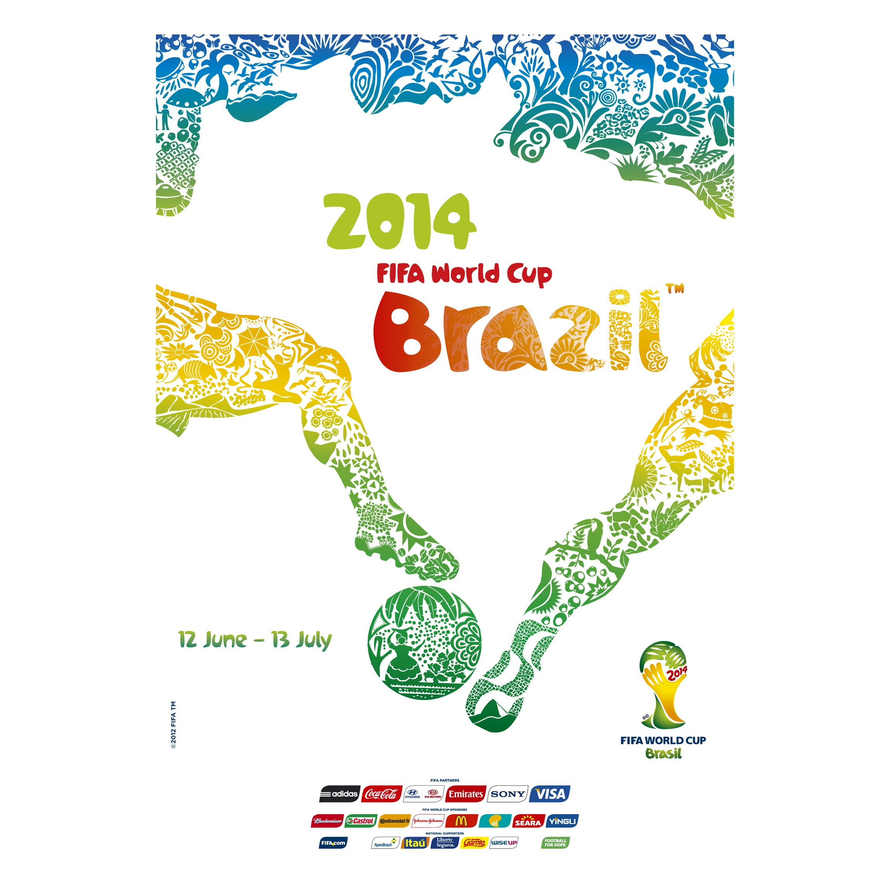
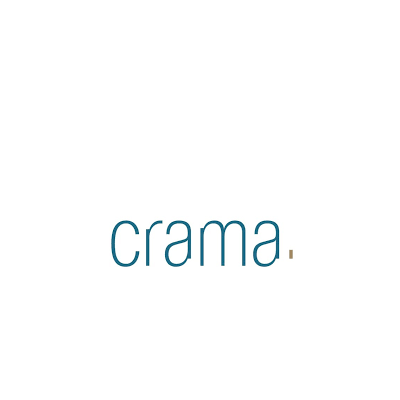

Official Poster
The official poster for the 2014 FIFA World Cup in Brazil was designed by the Brazilian creative agency Crama. It features a vibrant, colorful design that depicts two football players' legs challenging for a ball, with the negative space between them forming a silhouette of the map of Brazil.
The artwork was intended to showcase Brazil's beauty and diversity, using icons and patterns that represent the country's flora, fauna, and culture.
Two stylized legs coming together to form the shape of Brazil.
The patterns within the legs and the ball include elements like the frevo umbrella, carnival masks, and tropical birds.
Dominated by the yellow, green, and blue of the Brazilian national flag.

Crama
Crama (or Agência Crama) is the Rio de Janeiro-based creative agency that designed the Official Poster for the 2014 FIFA World Cup. Led by creative director Karen Haidinger, the agency beat out two other designs to have their work chosen by a high-profile judging panel that included Brazilian artist Romero Britto and football legends Ronaldo and Bebeto.
The agency's winning concept was "An entire country at football's service – Brazil and football: one shared identity".
Agência Crama specializes in strategic design and branding. Based in Rio de Janeiro, they are known for projects that balance traditional Brazilian culture with modern, innovative aesthetics. Their work on the 2014 poster was described by then-FIFA Secretary General Jérôme Valcke as a "splendid visiting card" for the nation's creative excellence.